Things I Love
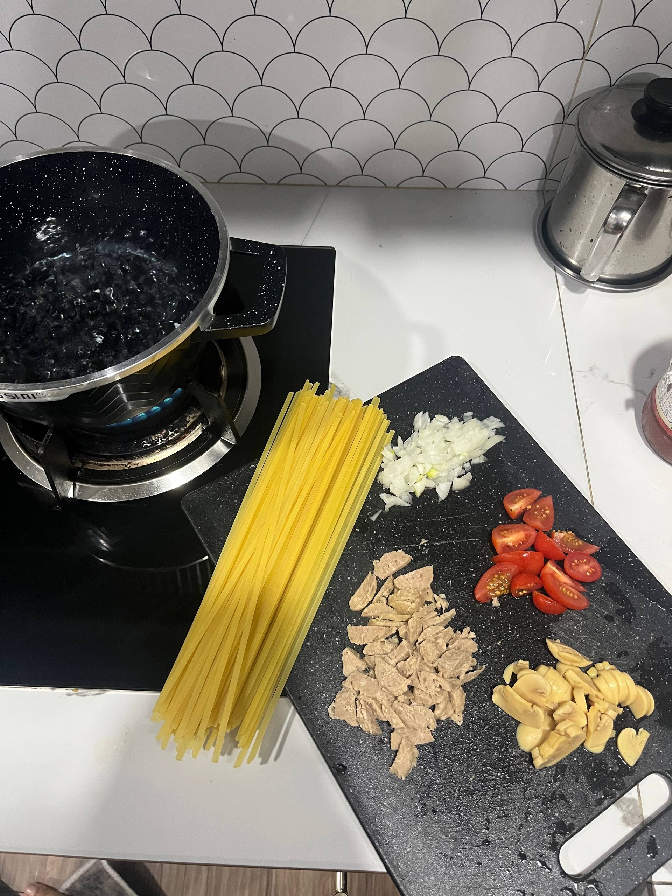
in the kitchen ♡
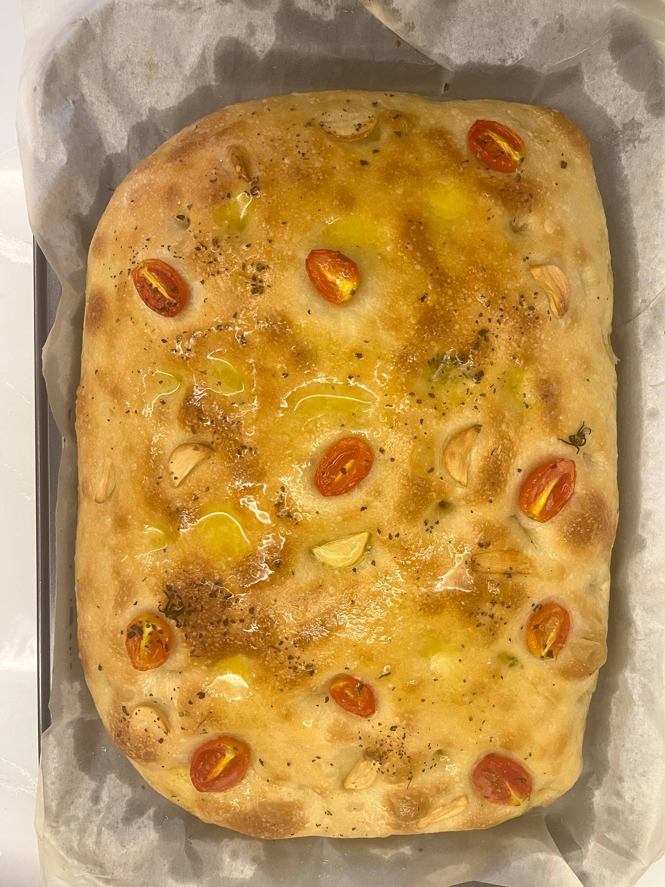
fresh from oven
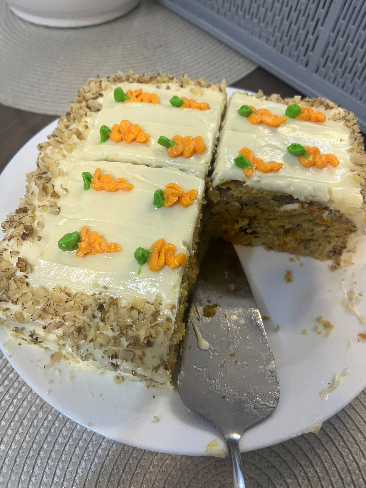
my creation
Cooking is my therapy
There is something so therapeutic about being in the kitchen. I love experimenting with new recipes, baking sweet treats, and cooking for the people I love. Food is my love language. I shared my cooking with the people I love
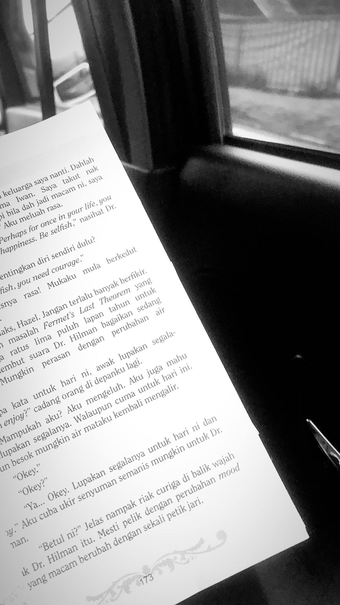
lost in a book
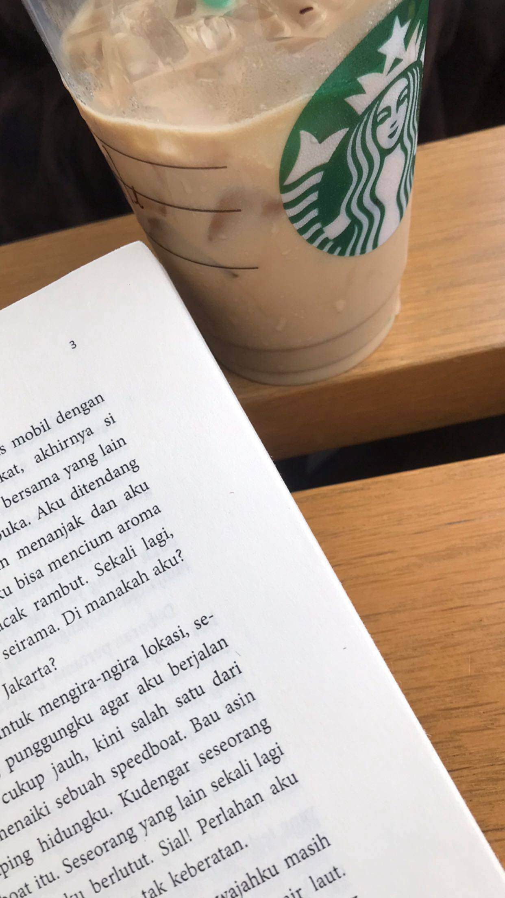
coffee and book
Little excape from reality
Books are my escape. Whether it is a cozy romance or a thrilling mystery, I love getting lost in a good story. Reading gives me a little world of my own.
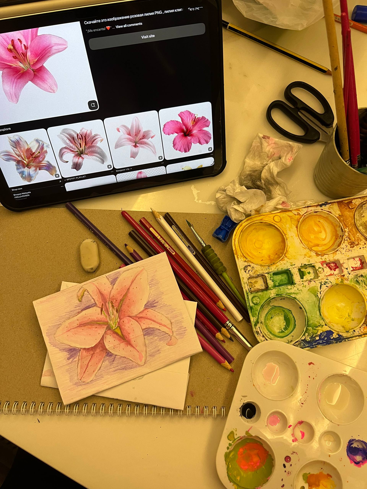
my sketches
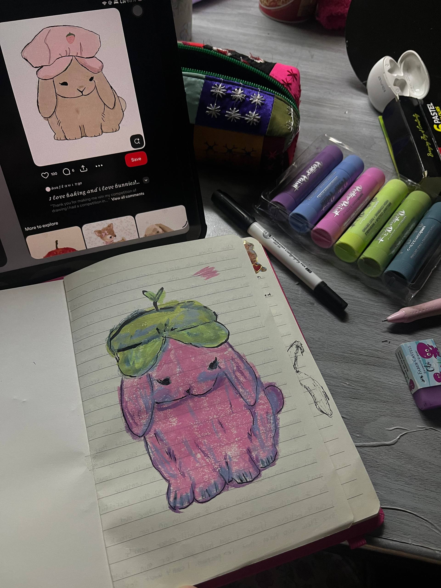
art time
Stress release
Drawing is how I express what words cannot. I love sketching little things, especially flowers and animals.
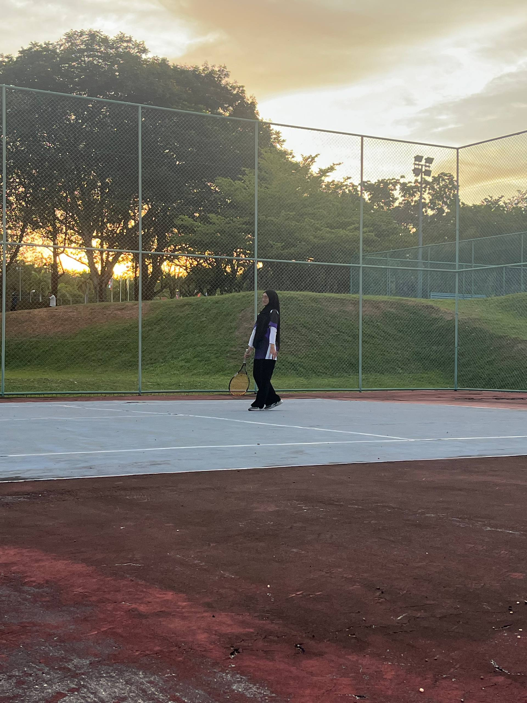
play with friend
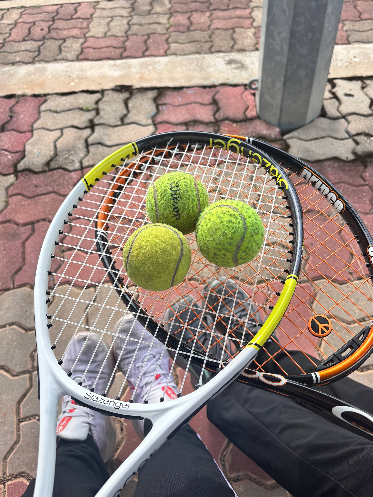
after game
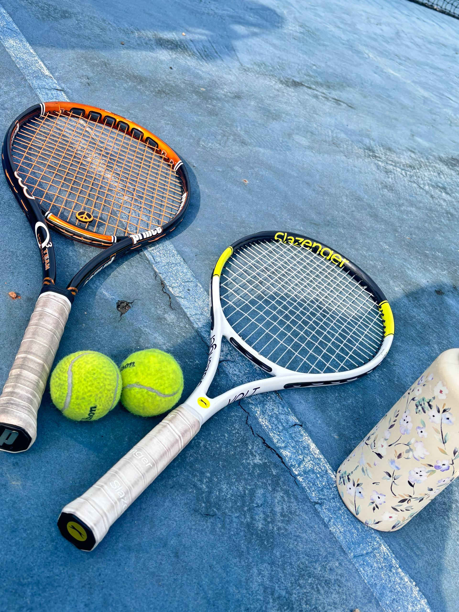
good play
Get pyhsic
Tennis keeps me active and sharp. I love the energy of the court, the sound of the ball, and the feeling of a good rally. It is my favourite way to unwind and stay fit.
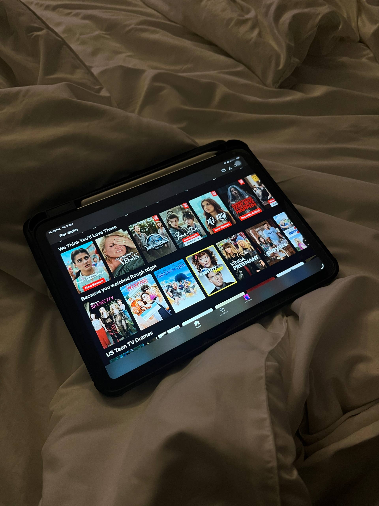
alone time
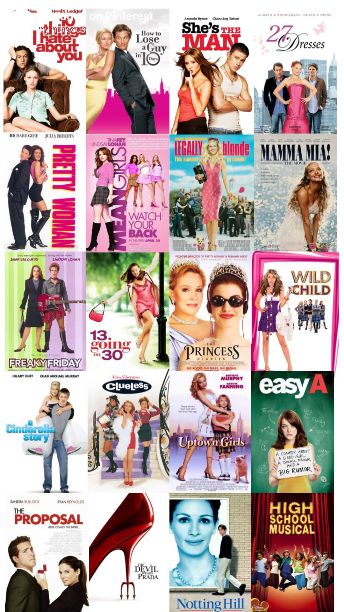
checklist
The cure
No one loves romcom more than I do. The 2000s romcom movie is my favourite.